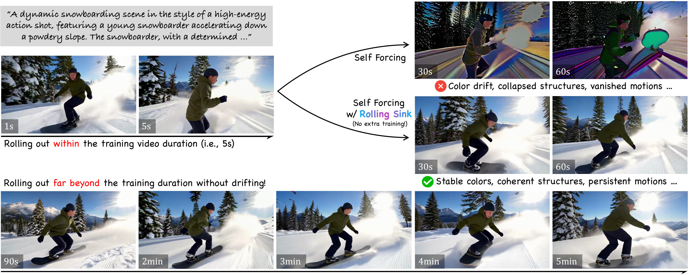
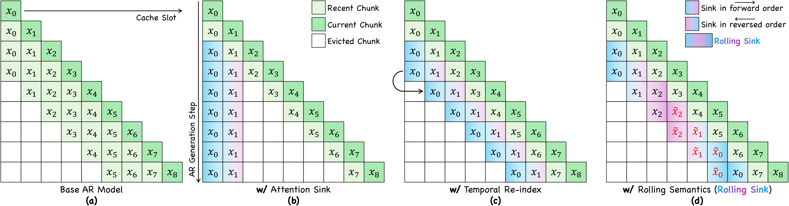
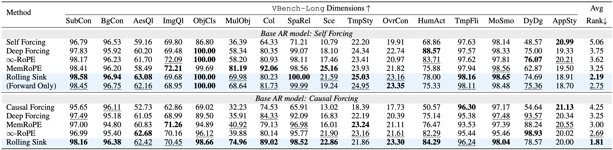
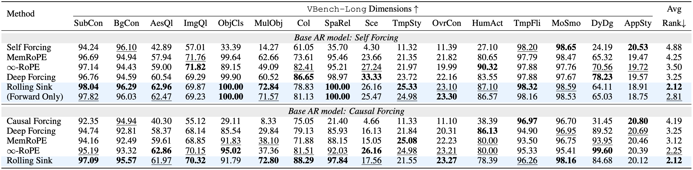
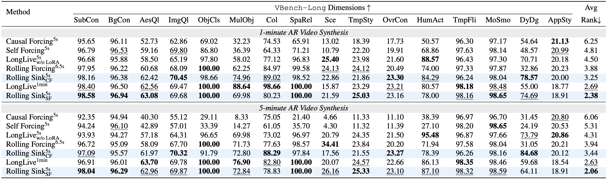
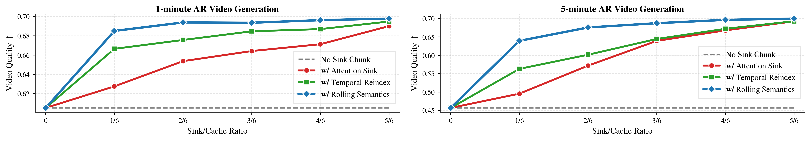
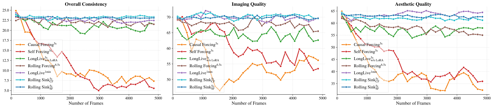
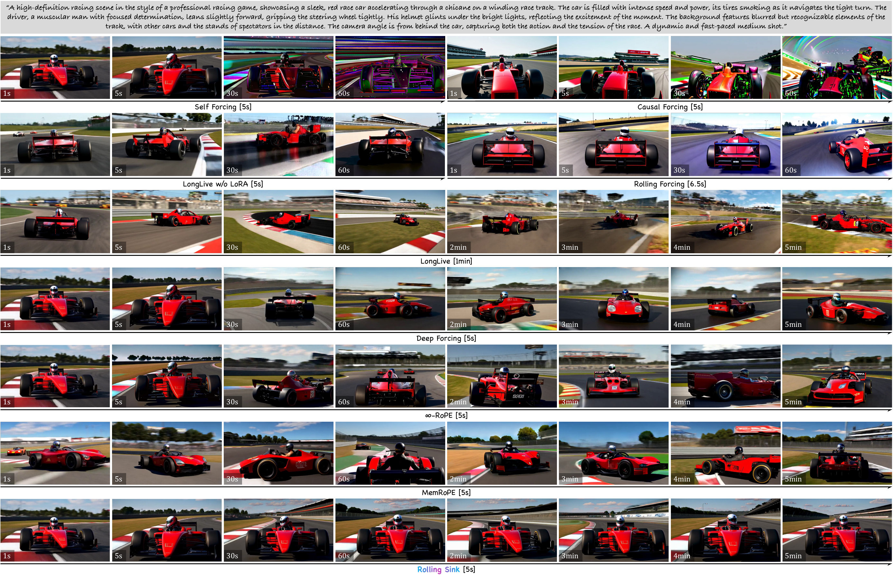

1UCSD 2Adobe
Autoregressive (AR) video diffusion models in the Self Forcing family generate a video chunk by chunk, each conditioned on the ones before it, so they can keep rolling out with no preset length. In practice they are trained on short, fixed clips (e.g., 5s). Once a rollout passes this training horizon, the cache fills with self-generated chunks the model never saw in training, and quality degrades: colors oversaturate, identities drift, structures collapse, and motion fades.
We frame this failure as a cache-behavior mismatch, a domain shift between the within-horizon caches seen in training and those produced by open-ended testing, and address it with Rolling Sink, a training-free inference-time cache policy. Within the base model's fixed cache budget, Rolling Sink holds the cache close to its stable within-horizon behavior: it restores low-drift content, sliding temporal indices, and evolving semantics, and keeps a small recent context. Attention sink and temporal re-indexing are existing mechanisms. Our contribution is the mismatch formulation, the joint bounded-cache policy, and the Rolling Semantics schedule.
On two 5s-trained bases, Self Forcing and Causal Forcing, Rolling Sink attains the best averaged rank on VBench-Long at both 1- and 5-minute rollouts under the same inference setting, at about 0.56% throughput change, and holds GPU memory constant. It also sustains a 30-minute qualitative rollout, $360\times$ its training horizon.
We validate at 1- and 5-minute rollouts and do not claim guaranteed quality at arbitrary duration.

Shot length in film is open-ended: a take may last seconds or run for minutes, like the 16.5-minute opening dialogue of Steve McQueen's Hunger or the minute-long tricycle shot in Kubrick's The Shining. This motivates open-ended generation, where the length is not fixed and the model must keep producing coherent frames for as long as asked.
Large video diffusion models (Sora, Wan, Kling, Veo, Gen) denoise all frames at once, which ties them to short, fixed clips and rules out this setting. AR video diffusion models in the Self Forcing family instead predict each chunk from previously generated ones, which lets them keep rolling out with no preset length. Within the training horizon they are stable, but once a rollout passes it they degrade fast.

Across a rollout the prompt and initial noise are fixed, so the only changing input is the cache i.e. the past self-generated chunks. The base was trained only on caches from within-horizon rollouts, so beyond that horizon the cache is out-of-distribution and quality degrades: a domain shift we call the cache-behavior mismatch. As we cannot train on unbounded lengths, the only test-time lever is to make the test cache resemble the within-horizon caches seen in training.
But resemble it along which axes? The cache reaches the model only through attention, so each chunk is read along three channels: content, temporal position (its RoPE index), and the semantic trajectory across chunks. Matching the training distribution therefore reduces to matching these three: ① low-drift content, ② sliding temporal indices, ③ evolving semantics. A frozen base keeps the last two but drifts on content. Rolling Sink restores all three in order under the base's bounded budget of $K$ chunks, with no extra training.
Rolling Sink is training-free. We apply it to two 5s-trained bases, Self Forcing and Causal Forcing, reusing each base's few-step denoising and cache budget $K=6$ at sink ratio $S/K=5/6$, and evaluate on VBench-Long over 1- and 5-minute rollouts. Baselines are training-free horizon-extension methods (Deep Forcing, ∞-RoPE, MemRoPE) and training-based ones (Self / Causal / Rolling Forcing, LongLive).
Rolling Sink attains the best averaged rank in every group, and its Self Forcing variant leads even the training-based baselines (including LongLive trained on 1-minute clips) at about 0.56% throughput change and constant GPU memory.




VBench-Long dimensions) rises as each cache behavior is added, best at $S/K=5/6$.


Rolling Sink keeps the base's few-step denoising and cache budget, its throughput thus tracks the base: 5.35 vs. 5.38 FPS on an NVIDIA RTX 4090 (a 0.56% change). Its GPU memory cost also stays constant, since $K$ does not grow with rollout length.
@article{li2026rolling,
title={Rolling Sink: Bridging Limited-Horizon Training and Open-Ended Testing in Autoregressive Video Diffusion},
author={Li, Haodong and Liu, Shaoteng and Lin, Zhe and Chandraker, Manmohan},
journal={arXiv preprint arXiv:2602.07775},
year={2026}
}